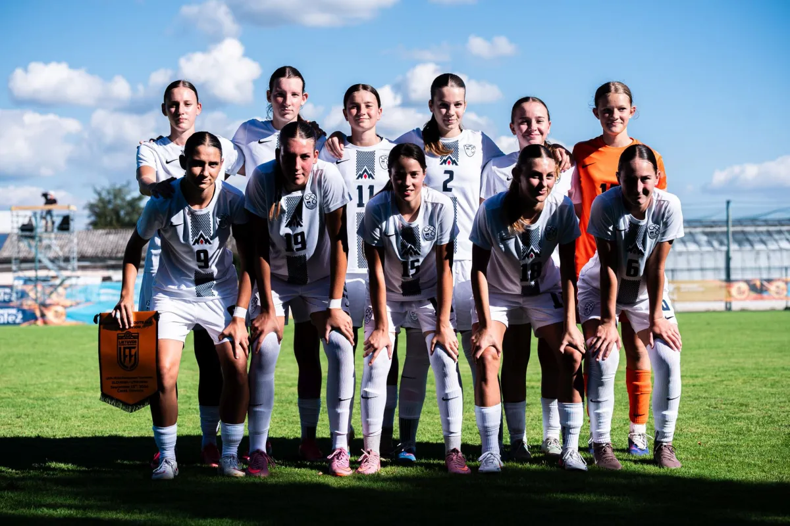
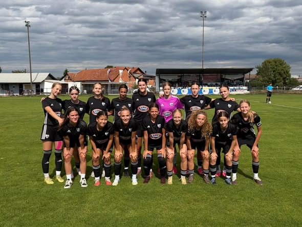
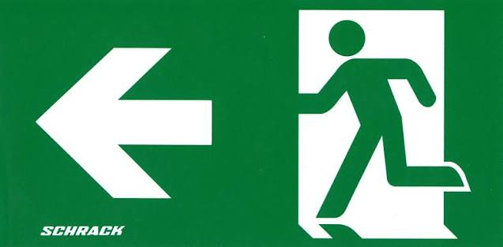

Kdo sem
Sem Sara Grobovšek, obiskujem osnovno šolo Radlje ob Dravi, treniram nogomet in igram za ŽNK Muro Nono, za NK Radlje in reprezentanco WU15.
Reprezentanca WU15
Septembra 2026 smo z reprezentanco WU15 osvojili razvojni turnir! Na poti do zmage smo premagali Litvo, Bosno in Hercegovino ter Madžarsko. 🏆

ŽNK Mura Nona in NK Radlje
Moja ekipa ŽNK Mura Nona DU17. S to ekipo smo sezono 2025/2026 osvojili 1. NZS ligo DU17! 🏆

Povezava do spletne strani Mure:
Uradna stran NŠ MuraMoji igrici
Igrici sem naredila sama v HTML in JavaScriptu. Klikni in igraj!
Nazaj
